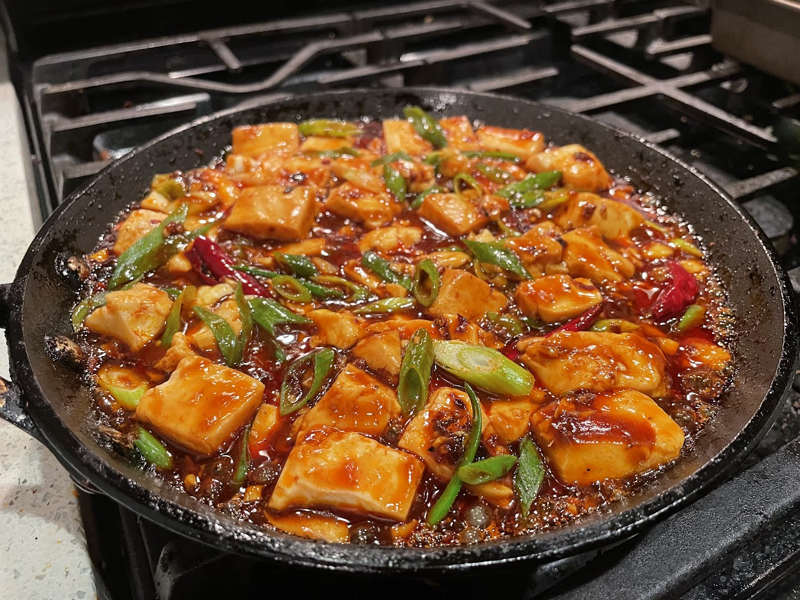
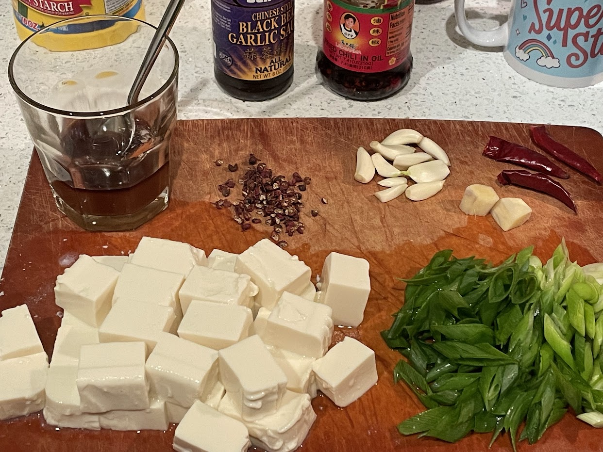

Mapo tofu
Serving size: 2 servings
Mapo tofu made with silken tofu
Prepped ingredients

Mapo tofu made with soft tofu instead of silken tofu, served alongside white rice
Ingredients
- 2 tsp Szechuan peppercorns
- Several cloves minced garlic
- Minced ginger (one half-thumb-sized piece)
- A few whole dried red chilies
- 2 tbsp Laoganma chili oil ("fried chili in oil")
- 2 tbsp fermented black bean paste
- One block of silken tofu, cut into cubes (soft tofu is an acceptable substitute)
- 5 tbsp soy sauce
- 2 tsp cornstarch
- A couple green onions (thinly bias-cut)
Instructions
Grrind Szechuan peppercorns in mortar & pestle. Dissolve cornstarch in soy sauce and stir until there are no lumps. Chop up garlic and ginger and green onions. Cook the Szechuan peppercorns, garlic, ginger, and bean paste with the Laoganma chili oil until sizzling and fragrant, then add the cubed tofu. Let it cool until no longer sizzling, then pour the soy sauce and cornstarch slurry on top and stir it in. Cooling it ensures that you're able to fully stir in the corn starch before it thickens. Bring the dish back up to high heat, add green onions, and cook for another 10 minutes or so. Serve immediately once it's done.
Serving suggestion
Serve with white rice. If you're a coward, you can remove the whole dried chilis.
Notes
The amounts for this recipe are very flexible, so you probably don't need to measure anything.
This is a surprisingly quick, easy, and cheap dish. I highly recommend it for college students.